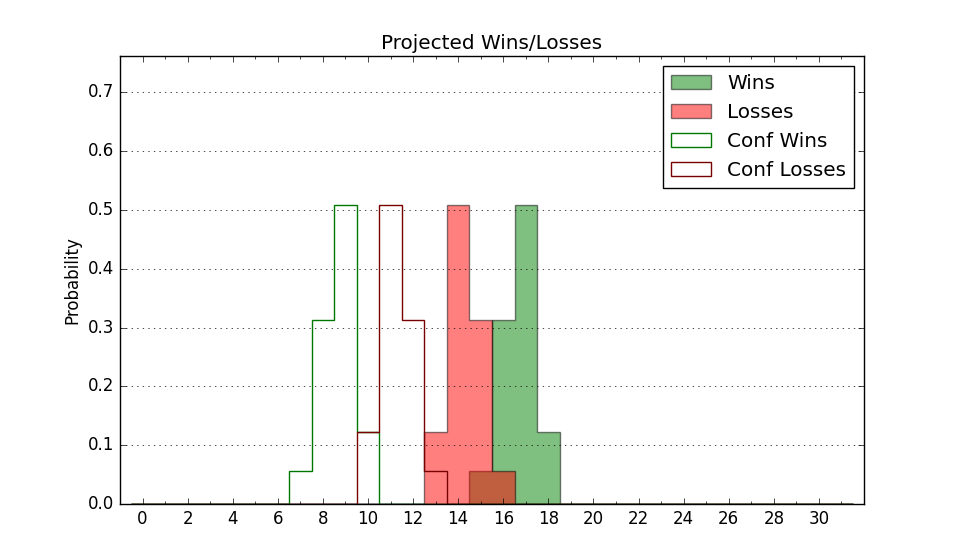

| Home | Game Probabilities | Conferences | Preseason Predictions | Odds Charts | NCAA Tournament |
| City: | Seattle, Washington | |
| Conference: | Pac 12 (9th)
| |
| Record: | 7-10 (Conf) 15-13 (Overall) | |
| Ratings: | Comp.: 12.7 (70th) Net: 12.7 (70th) Off: 112.7 (67th) Def: 99.9 (87th) SoR: 4.2 (95th) |
| Remaining | ||||||
|---|---|---|---|---|---|---|
| Date | Opponent | Win Prob | Pred. | |||
| 2/29 | UCLA (110) | 76.7% | W 73-65 | |||
| 3/2 | USC (92) | 71.7% | W 82-75 | |||
| 3/7 | @ Washington St. (30) | 22.4% | L 70-79 | |||
| Previous | Game Score | |||||
| Date | Opponent | Win Prob | Result | Off | Def | Net |
| 11/6 | Bellarmine (311) | 96.1% | W 91-57 | 0.8 | 14.9 | 15.8 |
| 11/9 | Northern Kentucky (188) | 89.4% | W 75-67 | -8.7 | 1.4 | -7.3 |
| 11/12 | Nevada (41) | 53.7% | L 76-83 | -4.1 | -6.5 | -10.6 |
| 11/18 | (N) Xavier (53) | 43.6% | W 74-71 | -11.7 | 20.4 | 8.7 |
| 11/19 | (N) San Diego St. (21) | 27.9% | L 97-100 | 15.2 | -20.2 | -5.0 |
| 11/28 | UC San Diego (114) | 76.9% | W 83-56 | -5.0 | 25.5 | 20.5 |
| 12/2 | (N) Colorado St. (38) | 36.2% | L 81-86 | 11.2 | -18.2 | -6.9 |
| 12/5 | Montana St. (262) | 93.2% | W 85-61 | -2.9 | 4.9 | 2.0 |
| 12/9 | Gonzaga (24) | 44.2% | W 78-73 | -7.7 | 12.4 | 4.7 |
| 12/17 | @Seattle (119) | 50.3% | W 100-99 | 17.0 | -13.6 | 3.4 |
| 12/21 | Eastern Washington (137) | 82.7% | W 73-66 | -19.1 | 10.3 | -8.8 |
| 12/29 | @Colorado (27) | 21.1% | L 69-73 | -14.1 | 17.0 | 2.9 |
| 12/31 | @Utah (52) | 29.5% | L 90-95 | 4.5 | -4.8 | -0.3 |
| 1/4 | Oregon (64) | 62.2% | L 74-76 | -3.6 | -7.4 | -11.1 |
| 1/6 | Oregon St. (151) | 85.3% | W 79-72 | 18.1 | -13.0 | 5.1 |
| 1/11 | Arizona St. (124) | 80.1% | W 82-67 | 6.7 | 0.6 | 7.3 |
| 1/14 | @UCLA (110) | 49.2% | L 61-73 | -18.9 | 0.5 | -18.4 |
| 1/18 | @California (107) | 48.4% | W 77-75 | -3.2 | -1.3 | -4.6 |
| 1/20 | @Stanford (102) | 47.1% | L 80-90 | 6.4 | -17.0 | -10.5 |
| 1/24 | Colorado (27) | 47.6% | L 81-98 | -0.9 | -18.4 | -19.3 |
| 1/27 | Utah (52) | 58.7% | W 98-73 | 20.4 | 7.0 | 27.4 |
| 2/3 | Washington St. (30) | 49.6% | L 87-90 | 18.0 | -19.3 | -1.2 |
| 2/8 | @Oregon (64) | 32.6% | L 80-85 | -3.1 | 4.1 | 1.0 |
| 2/10 | @Oregon St. (151) | 63.1% | W 67-55 | -3.4 | 15.5 | 12.1 |
| 2/15 | Stanford (102) | 75.2% | W 85-65 | -3.0 | 15.8 | 12.8 |
| 2/17 | California (107) | 76.2% | L 80-82 | -8.2 | -9.4 | -17.7 |
| 2/22 | @Arizona St. (124) | 54.2% | W 84-82 | 1.9 | 1.2 | 3.1 |
| 2/24 | @Arizona (3) | 6.8% | L 75-91 | -3.4 | 6.9 | 3.4 |
| Stats & Trends | |||||
|---|---|---|---|---|---|
| Current | Day | Week | Month | Season | |
| Composite | 12.7 | +0.1 | +0.1 | +1.5 | -0.5 |
| Comp Rank | 70 | -1 | +1 | +7 | -13 |
| Net Efficiency | 12.7 | +0.1 | +0.1 | +1.6 | -- |
| Net Rank | 70 | -1 | +1 | +11 | -- |
| Off Efficiency | 112.7 | -0.1 | -0.1 | +1.0 | -- |
| Off Rank | 67 | -1 | +3 | +2 | -- |
| Def Efficiency | 99.9 | +0.2 | +0.2 | +0.6 | -- |
| Def Rank | 87 | +2 | +3 | +23 | -- |
| SoS Rank | 23 | +8 | +5 | -5 | -- |
| Exp. Wins | 16.7 | -0.1 | +0.4 | +0.2 | -1.6 |
| Exp. Conf Wins | 8.7 | -0.1 | +0.4 | +0.2 | -2.0 |
| Conf Champ Prob | 0.0 | -- | -- | -0.0 | -6.5 |

| Advanced Stats | ||
|---|---|---|
| Stat | Value | Rank |
| Off Eff FG % | 0.557 | 36 |
| Off Ast Ratio | 0.167 | 55 |
| Off ORB% | 0.290 | 136 |
| Off TO Rate | 0.139 | 120 |
| Off FT Ratio | 0.357 | 110 |
| Def Eff FG % | 0.468 | 54 |
| Def Ast Ratio | 0.126 | 60 |
| Def ORB% | 0.265 | 128 |
| Def TO Rate | 0.145 | 195 |
| Def FT Ratio | 0.325 | 180 |